Case study · DuckDB · dbt · MCP
Census ACS Pipeline
GIS · Spatial Data · AI Integration Engineering
US Census ACS data → DuckDB → tested dbt marts → governed metrics → a read-only MCP server AI agents can query safely.
Problem
Census ACS data is easy to download and easy to get wrong: sentinel codes like -666666666 masquerade as numbers, every estimate carries a margin of error, 5-year windows overlap, and medians cannot be summed. Handing raw tables to an AI agent makes those mistakes faster. The goal: a reproducible pipeline that ingests ACS data, tests it, defines metrics once, and gives agents a read-only, guarded way to query it.
Data sources
- Census Data API (
api.census.gov), ACS 5-year estimates, with an API key - ACS table-based Summary File (
www2.census.gov), the no-key fallback - Scope today: Florida (state FIPS 12), 67 counties + the state total: population, median household income, median age and Hispanic / race counts, each with its margin of error
Architecture

Key decisions
- Quality gates before load. Row counts, columns, duplicate GEOIDs and parse rate are checked before anything is written.
- Idempotent loads. Each (year, state) is replaced atomically in DuckDB, never duplicated, so re-running is safe.
- Sentinels → NULL + flag. Staging turns Census “no value” codes into
NULLand keeps the code in<metric>_flag, so nothing is lost or miscounted. - Respect the statistics. 90% MOEs kept, CV > 0.30 flagged as unreliable, growth only across non-overlapping windows, and state medians taken from the official state row.
- Reconciliation test. A custom dbt generic test,
county_sum_matches_state, proves the 67 counties sum to the official state total. - Governed metrics.
semantic/metrics.ymldefines formula, grain and caveats, compiled to parameterized SQL. - Defense-in-depth MCP server. DuckDB opened
read_only=True, external access disabled, one SELECT/WITH statement only, row cap and timeout, and every call logged tologs/mcp.log. - Scales by config. All 50 states is a change to
geography.statesinconfig.yaml.
Verified results
Real agent tool calls and outputs are recorded in examples/agent_queries.md.
Show the work
dbt generic test: county_sum_matches_state (SQL + Jinja)
{# Generic test on a state-level model: sum of counties must match the official
state estimate within a relative tolerance.
WHY: proves no counties were dropped/duplicated between API and marts.
For additive counts (population, Hispanic population) ACS county estimates
sum exactly to the state; medians are NOT additive and must not use this test. #}
{% test county_sum_matches_state(model, column_name, county_sum_column, tolerance=none) %}
{% set tol = tolerance if tolerance is not none else var('county_state_tolerance') %}
select state_fips, acs_year, {{ column_name }} as state_value, {{ county_sum_column }} as county_sum
from {{ model }}
where {{ column_name }} is null
or {{ county_sum_column }} is null
or abs({{ county_sum_column }} - {{ column_name }}) > {{ tol }} * {{ column_name }}
{% endtest %}Source: census-pipeline/dbt/tests/generic/county_sum_matches_state.sql lines 1–13
MCP SQL guard: one read-only statement, forbidden keywords blocked (Python)
def _connect() -> duckdb.DuckDBPyConnection:
return duckdb.connect(DB_PATH, read_only=True, config={"enable_external_access": False})
# ---------- SQL guard (pure function, unit tested) ----------
FORBIDDEN = re.compile(
r"\b(insert|update|delete|merge|drop|create|alter|attach|detach|copy|export|import|install|load|"
r"pragma|set|reset|call|checkpoint|vacuum|truncate|grant|revoke|begin|commit|rollback|use)\b",
re.IGNORECASE,
)
FORBIDDEN_FUNCS = re.compile(r"\b(read_\w+|glob|getenv|sniff_csv|query_table|query)\s*\(", re.IGNORECASE)
class UnsafeQueryError(ValueError):
pass
def check_sql(sql: str) -> str:
"""Return a normalized single statement or raise UnsafeQueryError."""
s = re.sub(r"--[^\n]*|/\*.*?\*/", " ", sql, flags=re.S).strip().rstrip(";").strip()
if not s:
raise UnsafeQueryError("empty query")
# strip string literals before scanning so 'drop' inside a string is allowed
scan = re.sub(r"'(?:[^']|'')*'", "''", s)
if ";" in scan:
raise UnsafeQueryError("only one statement allowed")
if not re.match(r"^(select|with)\b", scan, re.IGNORECASE):
raise UnsafeQueryError("only SELECT / WITH queries are allowed")
m = FORBIDDEN.search(scan) or FORBIDDEN_FUNCS.search(scan)
if m:
raise UnsafeQueryError(f"forbidden keyword: {m.group(0).strip()}")
return sSource: census-pipeline/src/census_mcp/server.py lines 69–100
Next steps
- Activate the API key and add vintage 2014 (2010-2014; API only).
- All 50 states: list every FIPS in
geography.stateswith expected county counts. - Inflation-adjust incomes (CPI-U-RS) and add MOE for ratios and derived values.
- Expose dbt docs as MCP resources and add an orchestrator (cron / GitHub Actions / Dagster).
- Add more tables: B01001 age bands, B17001 poverty, B25077 home values.
Links
Demo / testing only, not authoritative. Figures on this page are copied from the linked repositories' READMEs.